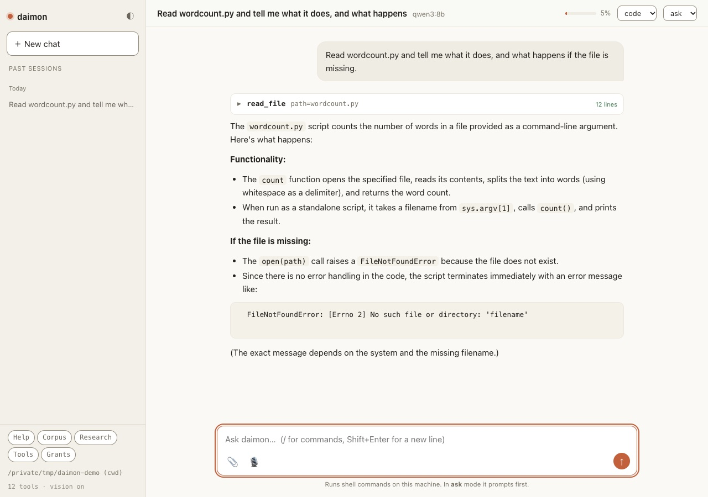

Daimon
A coding agent that runs entirely on your own machine
A small coding agent that writes and edits code, runs your tests and reads your repository without leaving your computer: no keys, no network, no telemetry. It is one loop, written to be read and changed, with a fifth of its lines given to comments explaining why.

The loop
The whole idea fits in a paragraph: send the conversation and the list of tools to a server running on the same machine, run whatever tools come back, add the results, and repeat until nothing more is asked for. It deliberately refuses to be a framework: no plugin system, no agent registry, no orchestration layer. The agent and the server that generates its replies are two separate processes joined by one standard protocol, so either can be swapped without touching the other.
Ways to run it
daimon -C ~/project: the agent in a terminal, asking before anything that writes.daimon-web: the same agent in a local browser tab, for long output, pasted screenshots and clicking back through past sessions.daimon-sandbox: the agent inside Docker on a network with no route out, where its only reachable neighbour is a proxy to the local server.--mode plan: exploration only, every write refused.
Permission
In the default mode it prompts before any tool that changes something, and lets through only shell commands that provably just read. The list of what runs without asking names whole invocations rather than programs, so git log runs unprompted while git push --force still asks. File tools are confined to the folders you open, and symlinks are resolved before the check so a link cannot lead out.
Memory
It keeps notes across sessions as plain markdown: cross-project facts in one folder, project notes in a DAIMON.md beside the code, both editable by hand. --learn-git reads your recent commits and writes the conventions it infers into that file, treated as a draft to correct. Every session is logged, and the agent can search those logs to find how something was fixed before.
Your own writing
daimon-corpus gives it something to read besides code: essays, notes, a PDF library and old chat conversations. Nothing is indexed unless you add it. Every passage keeps a locator such as d40:p12, so a quote can be fetched back and checked rather than trusted. It records who wrote each passage, and only your own words are used to learn your voice.
--learn-mewrites profiles of how you write and think, and every line must cite a passage it was actually shown or it is moved under Unverified.--as write,--as chat,--as artistand--as mediasay what a session is for, and only those sessions may search and quote your corpus.--researchwrites a cited report from your own library, and refuses to answer when it finds nothing.daimon-corpus coveragecounts passages and documents before any claim, and names what you would have to go and get when a subject is not covered.
Seeing and hearing
Images and screenshots go to a vision model that the agent calls as a tool, served from the same local endpoint as the coder, and only its answer enters the conversation, never the picture. Recordings dropped in the browser are transcribed on the spot, and a separate batch tool transcribes a whole folder on the host, skipping anything under thirty seconds because a drum hit transcribes into an invented sentence. A check_page tool loads a local page in a headless browser and returns its errors and visible text.
Measuring it
A fixed set of tasks runs again and again and reports a pass rate, and the check for each task runs the tests rather than asking the agent whether it succeeded. The first prompt change tried, an instruction to do only what was asked, looked right and made results measurably worse, and was dropped.
- Year
- 2026
- Medium
- software / command line / browser
- Runs on
- one Mac, with nothing sent off it
Python, two dependencies - Ways in
- a terminal, a local browser tab, a sealed container
- Repository: private